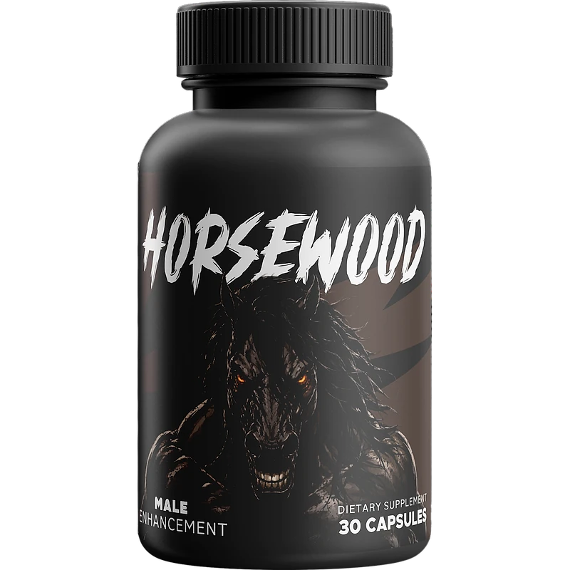
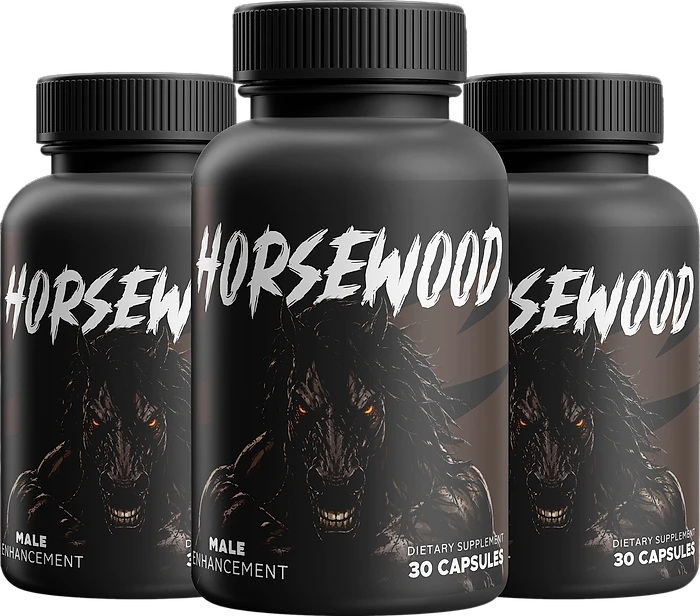
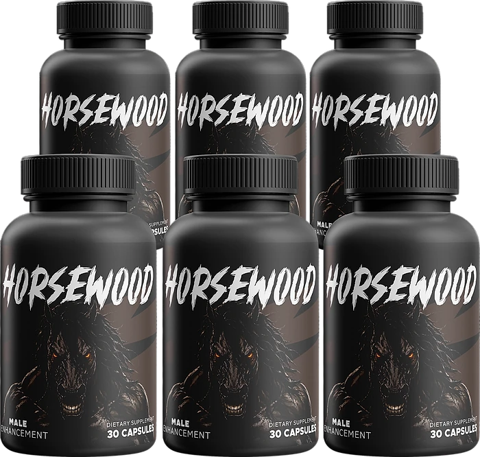

What Is HorseWood And How Does It Work?
HorseWood is a dietary supplement in capsule form designed to support male vitality, daily stamina, and steady energy for adult men who want to address the gradual drop in drive, energy, and confidence that can come with age, stress, and demanding routines through a natural, consistent approach — without complicated protocols or temporary quick fixes.
It utilizes a single daily capsule that combines Longjack (Tongkat Ali), Maca, L-Arginine, Asian Ginseng, Eleuthero, and Zinc with a botanical blend that includes Muira Puama, Pumpkin Seed, Oat Straw, Sarsaparilla, Catuaba, Tribulus, and Nettle, chosen to support healthy circulation, stamina, and the body's natural energy pathways.
According to the official website, the ingredients in HorseWood are herbal extracts and minerals selected to support healthy male function, drive, and overall wellness, particularly for men over 35 who prefer one capsule a day over a cabinet full of different products.
Rather than acting as a short-lived artificial boost, HorseWood focuses on a whole-formula approach, working gradually alongside daily routines. The official website describes the formula as free of stimulants, synthetic hormones, and prescription compounds, and it is not intended to replace medical care.
With consistent daily use, many users report more energy during the day, better motivation, and a gradual sense of renewed confidence, especially when the capsule is combined with a balanced diet, good sleep, and regular physical activity. The official website notes that every body responds on its own timeline and that results vary.
From a practical standpoint, HorseWood is a daily male vitality capsule designed to support wellness from within — helping you stay active, energized, and engaged in the things that matter to you.
Manufactured in the USA with globally sourced ingredients, according to the product label, and made in a cGMP facility according to the official website, HorseWood is designed for regular daily use, with a focus on safety, purity, and quality for men seeking a natural, non-prescription route to everyday vitality.
HorseWood Ingredients
Every capsule of HorseWood contains the following active ingredients, as listed on the Supplement Facts panel of the label, chosen to support energy, stamina, and male vitality as part of a consistent daily routine:
Longjack (200 mg): Eurycoma longifolia root, also known as Tongkat Ali, traditionally used to support drive and vitality in adult men.
Maca Root (125 mg): A Lepidium meyenii root from the Andes studied for its potential to support stamina and desire.
L-Arginine HCl (125 mg): An amino acid the body uses to produce nitric oxide, included to support healthy circulation.
Ginseng Eleutherococcus Blend (63 mg): Asian Ginseng (Panax ginseng) root and Eleuthero root, two adaptogens traditionally used for energy and resilience.
Zinc (25 mg) and Calcium (184 mg): Essential minerals; zinc supports normal testosterone levels as part of a healthy diet.
Proprietary Blend (373 mg): Pumpkin Seed, Sarsaparilla, Muira Puama, Oat Straw, Boron, Cayenne Pepper, Catuaba, Chinese Licorice, Tribulus, Orchic substance, Oyster Extract, Astragalus, and Nettle.
Together, these ingredients are designed to work synergistically to support vigor, endurance, and steady drive from within. The label lists vegetable stearic acid, vegetable magnesium stearate, and silicon dioxide as other ingredients, and it states that the formula contains shellfish (oyster).
HorseWood is designed for daily use, offering a natural, non-prescription approach to supporting male vitality, without complicated routines or aggressive synthetic compounds.
HorseWood Side Effects
HorseWood is generally considered well tolerated and is designed for adult men of different ages and lifestyles who are looking for a simple, natural, and balanced approach to energy and vitality, especially those who prefer an easy one-capsule daily routine to support stamina, drive, and well-being without resorting to risky solutions.
According to the official website, HorseWood is made from herbal extracts and minerals, with no stimulants, no synthetic hormones, and no habit-forming compounds, and it is third-party tested for purity. The label states that it is manufactured in the USA with globally sourced ingredients.
With no widespread reports of serious side effects, HorseWood is generally considered a well-tolerated option. Because L-Arginine and several botanicals act on circulation, the official website advises men who take medication — especially for blood pressure, blood thinners, or hormone therapies — to talk to their doctor before starting. The formula contains shellfish (oyster), so anyone with a shellfish allergy should avoid it. It is not intended to diagnose, treat, cure, or prevent any disease, and individual results may vary.
According to the label, pregnant or nursing mothers, children under the age of 18, and individuals with a known medical condition should consult a physician before using HorseWood. The label also says not to exceed the recommended dose and not to use the product if the safety seal is damaged or missing.
HorseWood Dosage
The recommended HorseWood dosage is one capsule a day with an 8 oz. glass of water, and it is designed to fit easily into a daily routine, making consistency simple and convenient. There are no powders to mix, no drinks to prepare, and no complicated timing.
The approach printed on the label is to take one (1) HorseWood capsule daily. For best results, the label suggests taking it 20 to 30 minutes before a meal with 8 oz. of water, or as directed by your healthcare professional. The official website adds that the morning is a convenient time.
For best results, consistency is key. Each bottle contains 30 capsules, a one-month supply, and the official website explains that botanical support builds over the first weeks of daily use, so many customers make it part of an ongoing wellness routine.
There is no need for complex schedules, loading phases, or cycling. One simple daily capsule is designed to build lasting support gradually alongside a balanced diet, good sleep, and an active lifestyle. The label also advises storing the bottle in a cool, dry place away from heat and light.
As with any dietary supplement, it's important not to exceed the recommended dose and to check the label on your bottle. HorseWood works best when used regularly, combined with proper hydration, balanced nutrition, and healthy daily habits.
HorseWood – Refund Policy
You can order HorseWood with confidence, knowing that every purchase is protected by a 60-day money-back guarantee from the date of order. This allows you to try the formula and decide if it delivers the support you expect.
According to the returns page on the official website, refunds are available for unused bottles in perfect condition returned to the fulfillment center within 60 days of the order date. The company recommends using HorseWood for at least two months before deciding, so the formula has enough time to work.
How the refund process works: Send the unused bottles to the return address published on the official website (Horsewood, PO Box 12730, Ogden, UT 84412) with the original packing slip or, if you don't have it, your order ID, full name, shipping address, email, and phone number. Return shipping is paid by the customer, and the original shipping and handling fees are not refunded.
Customer Support Contact Information: support@healthyconsumer.us or +1 (844) 581-6613, as printed on the product label. Phone support is available Monday to Friday, 9am to 5pm EST, and the team aims to answer emails within 24 hours.
Refund Processing Time: Once the return is received and processed, the refund is credited back to your account and may take up to 5 to 10 business days to appear on your statement, depending on your bank. You will receive an email when it is done.
This refund policy is designed to give customers a clear and transparent experience when trying HorseWood, and according to the official website every order is a one-time purchase with no subscription.
HorseWood – Where To Buy
HorseWood is sold through its official website, so if you decide to try it, it's important to be careful about where you purchase it. According to the official website, the manufacturer does not sell on Amazon, eBay, or any third-party marketplace.
Listings on third-party platforms may look similar but cannot be verified as authentic, raising concerns about safety, quality, and ingredient freshness. Products purchased outside the official source may not be covered by the 60-day guarantee.
For this reason, most customers recommend purchasing HorseWood only through the official website. Buying directly from the official source ensures you receive the authentic original product, manufactured in the USA, with access to customer support and the full guarantee. According to the official website, every purchase is a one-time payment, with no auto-ship programs or recurring fees.
To avoid counterfeit batches and ensure maximum quality, always verify that you are ordering from the official HorseWood website before completing your purchase.
To ensure you’re getting the authentic product, most users choose to visit the official website.
Is HorseWood A Scam?
Based on what the official website and the product label disclose, HorseWood does not appear to be a scam. It is a real capsule supplement, sold through an established retailer, and formulated to support male energy, stamina, and vitality as part of a consistent routine.
The ingredients used in HorseWood — including Longjack, Maca, L-Arginine, Asian Ginseng, Zinc, Muira Puama, Pumpkin Seed, Oat Straw, and Sarsaparilla — are well known in the wellness field, and the label publishes a Supplement Facts panel with the amount of the main ingredients and the total of the botanical blend.
In addition to its formula, HorseWood is manufactured in the USA with globally sourced ingredients, according to the product label, which also identifies the distributor with a mailing address, a toll-free phone number, and a support email, with a focus on safety, purity, and consistency.
Many users report more energy, motivation, and confidence throughout the day and an easy daily habit, making HorseWood a practical option for men seeking natural support for vitality. Results vary from person to person, and no supplement replaces medical care or prescribed treatment.
HorseWood is backed by a 60-day money-back guarantee. The return rules, including the unused-bottle requirement and the return address, are published on the official website, which underscores the manufacturer's transparency with customers.
If you're looking for a simple daily capsule to support energy, stamina, and well-being without complicated routines, HorseWood is worth considering — especially when purchased directly from the official website.
For those who want to verify product details or check current availability, the official HorseWood website remains the safest option.

Check Availability On Official Website
